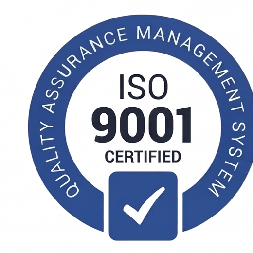
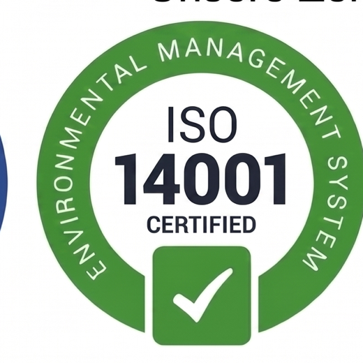
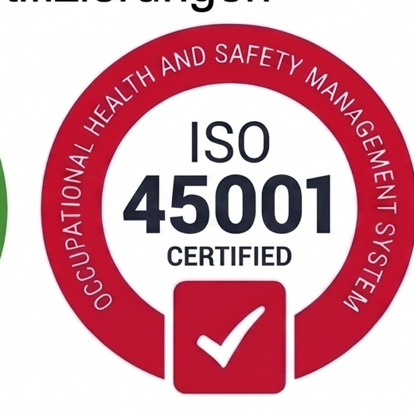
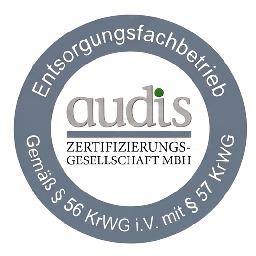

Hoch- & Tiefbau | Innenausbau & Sanierung
Solide Bauausfuehrung fuer Neubau, Bestand, Umbau und technische Sanierung.
Fuer Investoren, Projektentwickler, Gewerbe, Hausverwaltungen und private Bauherren.Green Construction GmbH | Eschborn
Ihr Partner fuer Hoch- und Tiefbau, schluesselfertige Bauprojekte, Sportplatzbau sowie Recycling, Entsorgung und Sekundaerrohstoffe.
Vier klare Leistungssaeulen
Solide Bauausfuehrung fuer Neubau, Bestand, Umbau und technische Sanierung.
Fuer Investoren, Projektentwickler, Gewerbe, Hausverwaltungen und private Bauherren.Ein Ansprechpartner fuer Planung, Koordination, Ausfuehrung und Uebergabe.
Fuer Bautraeger, Investoren, Unternehmen, Projektgesellschaften und private Auftraggeber.Belastbare Sport- und Aussenanlagen von der Vorbereitung bis zur fertigen Flaeche.
Fuer Kommunen, Vereine, Schulen, Traeger, Betreiber und Projektentwickler.Geregelte Entsorgungswege und verwertbare Baustoffstroeme fuer nachhaltige Projekte.
Fuer Bauunternehmen, Rueckbauer, Projektentwickler, Gewerbe und Kommunen.Unternehmen
Green Construction GmbH verbindet klassische Bauausfuehrung mit strukturierter Projektsteuerung und verantwortungsbewusstem Umgang mit Ressourcen. Vom Standort Eschborn aus betreuen wir Bau- und Infrastrukturvorhaben fuer gewerbliche, oeffentliche und private Auftraggeber.
Zertifizierungen

Qualitaetsmanagement
Umweltmanagement
Arbeitsschutz
EntsorgungsfachbetriebReferenzen
Umbau und Innenausbau einer gewerblich genutzten Flaeche mit enger Terminbindung.
Koordination mehrerer Gewerke bis zur nutzungsbereiten Uebergabe.
Rueckbau, Vorbereitung und Erneuerung einer stark beanspruchten Sportflaeche.
Materialtrennung, Containerlogistik und geregelte Entsorgungsstruktur.
Kontakt
Je frueher Anforderungen, Rahmenbedingungen und Schnittstellen geklaert sind, desto besser laesst sich ein Projekt strukturieren.
Frankfurter Strasse 80-82
65760 Eschborn
Deutschland
office@green-construction.de
+49 (0) 6196 / 2048 314
Rechtliches
Angaben gemaess § 5 Digitale-Dienste-Gesetz (DDG): Green Construction GmbH, Frankfurter Strasse 80-82, 65760 Eschborn, Deutschland. Geschaeftsfuehrer: Dipl.-Ing. Michael-Eugen Adam. Prokurist: Patrick-Justin Adam. Registergericht: Amtsgericht Frankfurt am Main, HRB 112724. USt-IdNr.: DE320014902. E-Mail: office@green-construction.de.
Wir verarbeiten personenbezogene Daten nach DSGVO und BDSG, insbesondere fuer Websitebetrieb, Server-Logfiles, Kontaktanfragen, Vertragskommunikation und Sicherheit. Optionale Cookies, Tracking oder externe Medien werden nur nach Einwilligung aktiviert. Betroffene Personen haben Rechte auf Auskunft, Berichtigung, Loeschung, Einschraenkung, Datenuebertragbarkeit, Widerspruch und Widerruf.
Diese Website verwendet notwendige Cookies fuer den Betrieb. Optionale Analyse-, Marketing- oder externe Medien-Cookies werden nur mit Einwilligung genutzt.